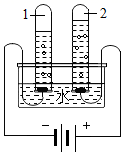

2021年北京市中考化学真题 · 选择题 第6、7、8、9、10题
6. 下列仪器不能加热的是
A. 烧杯B. 试管C. 量筒D. 燃烧匙
7. 下列物质含有氢分子的是
A. Ca（OH）2B. H2CO3C. H2O2D. H2
8. 下列物质能除铁锈的是
A. 盐酸B. 植物油C. NaOH溶液D. 食盐水
9. 电解水实验如图，下列说法不正确的是

A. 试管1中得到H2B. 水由H2、O2构成
C. 水发生了分解反应D. 水由氢、氧元素组成
10. 下列元素中，人体摄入过低会引起贫血的是
A. 铁B. 碘C. 锌D. 钙